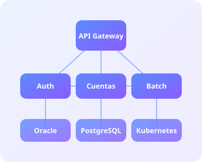

🎓 Estudios
Ingeniería en Sistemas Computacionales, TESE (1998–2003).
Formación en Inteligencia Artificial, Infotec (2026).
Maestría en Dirección Estratégica de TIC, Infotec (2026).
Hola, soy
Desarrollador Full Stack Java Sr · Arquitecto de software
Microservicios, Spring Boot, Cloud (AWS), Docker y Kubernetes. Más de 15 años construyendo sistemas de alta criticidad en entornos financieros y gubernamentales.

Ingeniero de Software Senior especializado en Backend Java, APIs y arquitecturas de microservicios. He participado en todo el ciclo de vida de las soluciones: requerimientos, diseño de arquitectura, desarrollo, integración, pruebas, despliegue y soporte productivo.
Combino desarrollo hands-on, liderazgo técnico y visión de arquitectura (hexagonal, Clean Architecture, DDD), con conocimientos de JavaScript, TypeScript, Node.js y React para construir soluciones end-to-end.
Prototipo de arquitectura hexagonal modular y conectores desplegados en Kubernetes con CI/CD (GitHub Actions → SonarQube → Veracode → Argo). Consumo de APIs externas con WebClient, SOAP y Oracle.
Lideré un equipo de 7 personas en el proyecto de constancias fiscales. Procesos batch multihilo que procesan ~3 millones de registros en menos de 1 hora, migración de servicios legacy a Spring Boot y participación en comités de arquitectura.
Servicios REST para apertura de cuentas con automatización y trazabilidad de solicitudes; despliegue en AWS (ECS, ECR, S3, DynamoDB, SES) y Kubernetes con JWT y OAuth2.
Módulos de finiquitos, provisiones, indemnización y auditoría con Struts2, IBM Portlet y WAS 8.5 bajo Scrum.
Migración de Informix a Oracle, refactorización de Java 1.6 a 1.8 con TOGAF, servicios SOAP/REST, FileNet IBM y un portal Angular con Spring Boot.
Más de una década en sistemas de nómina federalizada, reintegros, conciliación y presupuesto con Groovy/Grails, Vaadin, WSO2 ESB/DSS, Activiti y Oracle.
Ingeniería en Sistemas Computacionales, TESE (1998–2003).
Formación en Inteligencia Artificial, Infotec (2026).
Maestría en Dirección Estratégica de TIC, Infotec (2026).
Oracle Certified Associate, Java SE 8 (2018).
Scrum Fundamentals Certified, CertiProf (2020).
Diplomado en Arquitectura Hexagonal, MitoCode (2026).
Microsoft Azure Administrator · TOGAF 10 Level 1 · OpenShift 4 · Docker · Kubernetes · Microservicios con Spring Cloud · Jenkins · DDD y eventos.
¿Tienes un proyecto o una oportunidad? Escríbeme.
gonzacah27@hotmail.com